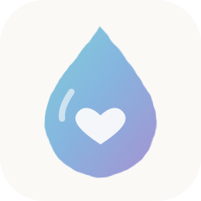
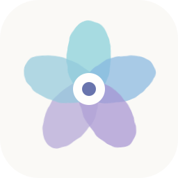

1 · Aquarell-HerzEin weiches Herz mit überlappenden Farbschichten. Warm und auf Anhieb erkennbar.Auch klein erkennbarSVG herunterladen
2 · Kleines ioEin persönliches Monogramm: IO als ruhiges, gut lesbares Zeichen. Mein Favorit.Auch klein erkennbarSVG herunterladen
3 · Ein kleiner TropfenEin ruhiges Symbol für die Mahlzeiten, mit einer kleinen hellen Herzform.Auch klein erkennbarSVG herunterladen
4 · GeborgenZwei schützende Bögen um einen kleinen Mittelpunkt – Julia, Christian und Philine.Auch klein erkennbarSVG herunterladen
5 · Kleine BlüteFünf transparente Blütenblätter – verspielt und nah an den Aquarellfarben der Karte.Auch klein erkennbarSVG herunterladen